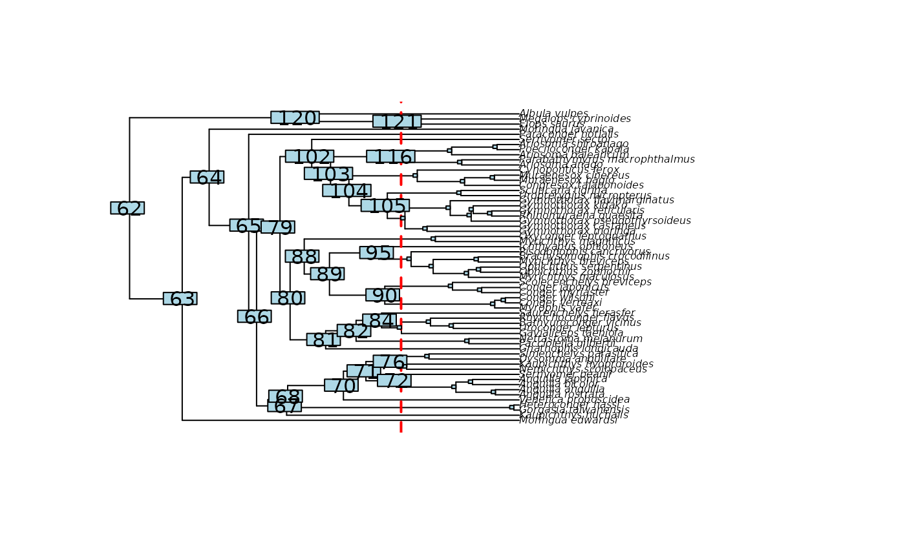
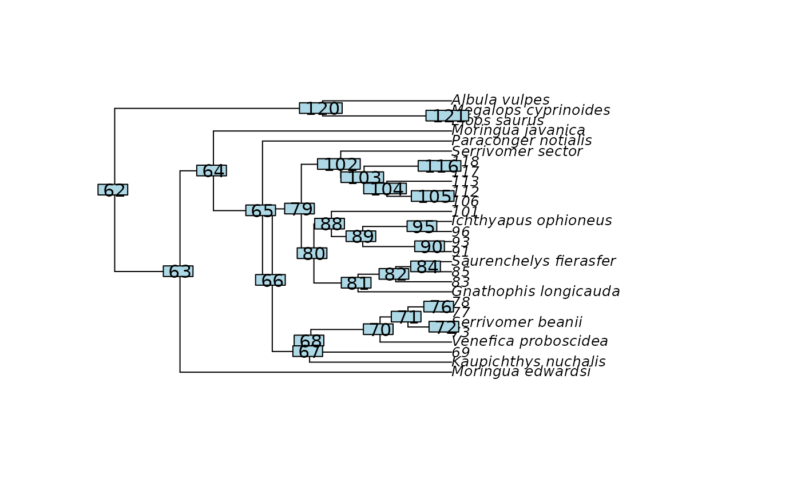
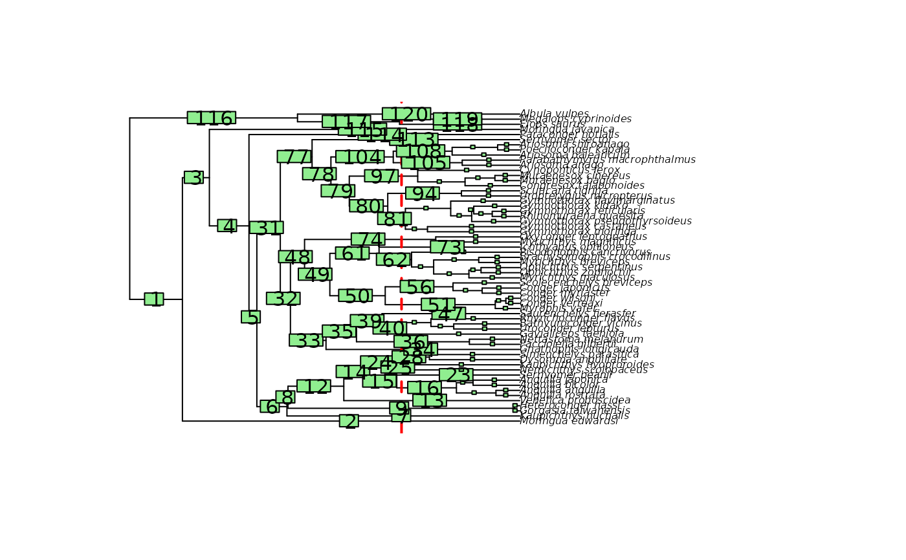
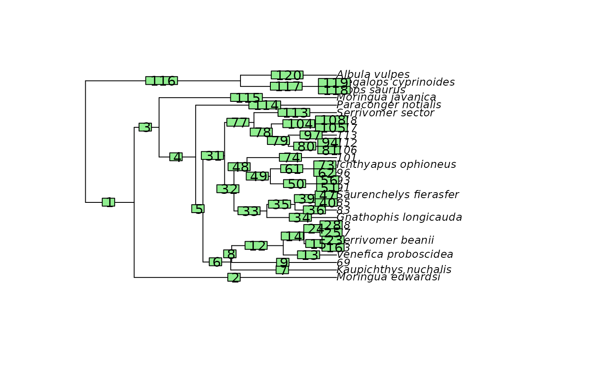
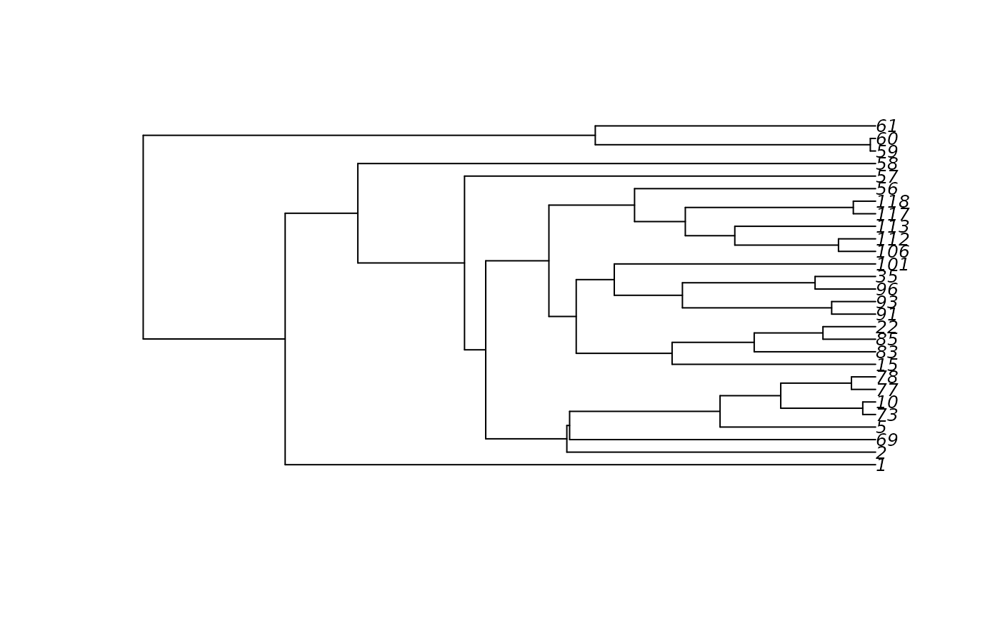

Cuts the phylogeny for a given time in the past
Source:R/cut_phylo_for_focal_time.R
cut_phylo_for_focal_time.RdCuts off all the branches of the phylogeny which are
younger than a specific time in the past (i.e. the focal_time).
Branches overlapping the focal_time are shorten to the focal_time.
Arguments
- tree
Object of class
"phylo". The phylogenetic tree must be rooted and fully resolved/dichotomous, but it does not need to be ultrametric (it can includes fossils).- focal_time
Numerical. The time, in terms of time distance from the present, for which the tree must be cut. It must be smaller than the root age of the phylogeny.
- keep_tip_labels
Logical. Specify whether terminal branches with a single descendant tip must retained their initial
tip.label. Default isTRUE.
Value
The function returns the cut phylogeny as an object of class "phylo". It adds multiple useful elements to the object.
$root_ageInteger. Stores the age of the root of the tree.$nodes_ID_dfData.frame with two columns. Provides the conversion from thenew_node_IDto theinitial_node_ID. Each row is a node.$initial_nodes_IDVector of character strings. Provides the initial ID of internal nodes. Used to plot internal node IDs as labels withape::nodelabels().$edges_ID_dfData.frame with two columns. Provides the conversion from thenew_edge_IDto theinitial_edge_ID. Each row is an edge/branch.$initial_edges_IDVector of character strings. Provides the initial ID of edges/branches. Used to plot edge/branch IDs as labels withape::edgelabels().
Details
When a branch with a single descendant tip is cut and keep_tip_labels = TRUE,
the leaf left is labeled with the tip.label of the unique descendant tip.
When a branch with a single descendant tip is cut and keep_tip_labels = FALSE,
the leaf left is labeled with the node ID of the unique descendant tip.
In all cases, when a branch with multiple descendant tips (i.e., a clade) is cut, the leaf left is labeled with the node ID of the MRCA of the cut-off clade.
See also
cut_contMap_for_focal_time() cut_densityMaps_for_focal_time()
For a guided tutorial, see this vignette: vignette("cut_phylogenies", package = "deepSTRAPP")
Examples
# Load eel phylogeny from the R package phytools
# Source: Collar et al., 2014; DOI: 10.1038/ncomms6505
library(phytools)
#> Loading required package: ape
#> Loading required package: maps
data(eel.tree)
# ----- Example 1: keep_tip_labels = TRUE ----- #
# Cut tree to 30 Mya while keeping tip.label on terminal branches with a unique descending tip.
cut_eel.tree <- cut_phylo_for_focal_time(tree = eel.tree, focal_time = 30, keep_tip_labels = TRUE)
# Plot internal node labels on initial tree with cut-off
plot(eel.tree)
abline(v = max(phytools::nodeHeights(eel.tree)[,2]) - 30, col = "red", lty = 2, lwd = 2)
nb_tips <- length(eel.tree$tip.label)
nodelabels_in_cut_tree <- (nb_tips + 1):(nb_tips + eel.tree$Nnode)
nodelabels_in_cut_tree[!(nodelabels_in_cut_tree %in% cut_eel.tree$initial_nodes_ID)] <- NA
ape::nodelabels(text = nodelabels_in_cut_tree)

# Plot initial internal node labels on cut tree
plot(cut_eel.tree)
ape::nodelabels(text = cut_eel.tree$initial_nodes_ID)

# Plot edge labels on initial tree with cut-off
plot(eel.tree)
abline(v = max(phytools::nodeHeights(eel.tree)[,2]) - 30, col = "red", lty = 2, lwd = 2)
edgelabels_in_cut_tree <- 1:nrow(eel.tree$edge)
edgelabels_in_cut_tree[!(1:nrow(eel.tree$edge) %in% cut_eel.tree$initial_edges_ID)] <- NA
ape::edgelabels(text = edgelabels_in_cut_tree)

# Plot initial edge labels on cut tree
plot(cut_eel.tree)
ape::edgelabels(text = cut_eel.tree$initial_edges_ID)

# ----- Example 2: keep_tip_labels = FALSE ----- #
# Cut tree to 30 Mya without keeping tip.label on terminal branches with a unique descending tip.
# All tip.labels are converted to their descending/tipward node ID
cut_eel.tree <- cut_phylo_for_focal_time(tree = eel.tree, focal_time = 30, keep_tip_labels = FALSE)
plot(cut_eel.tree)
